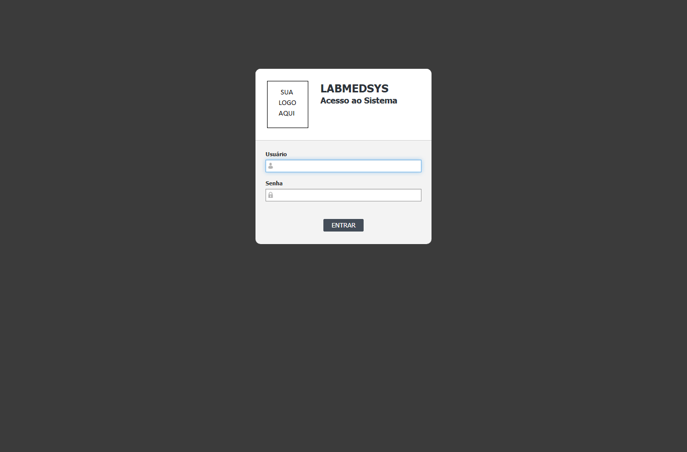
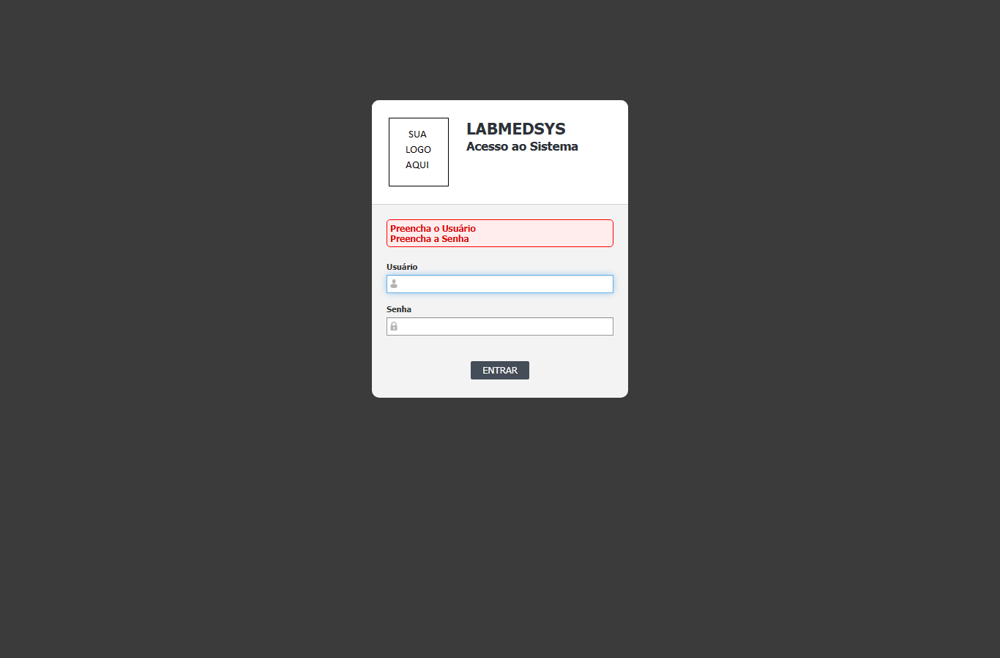
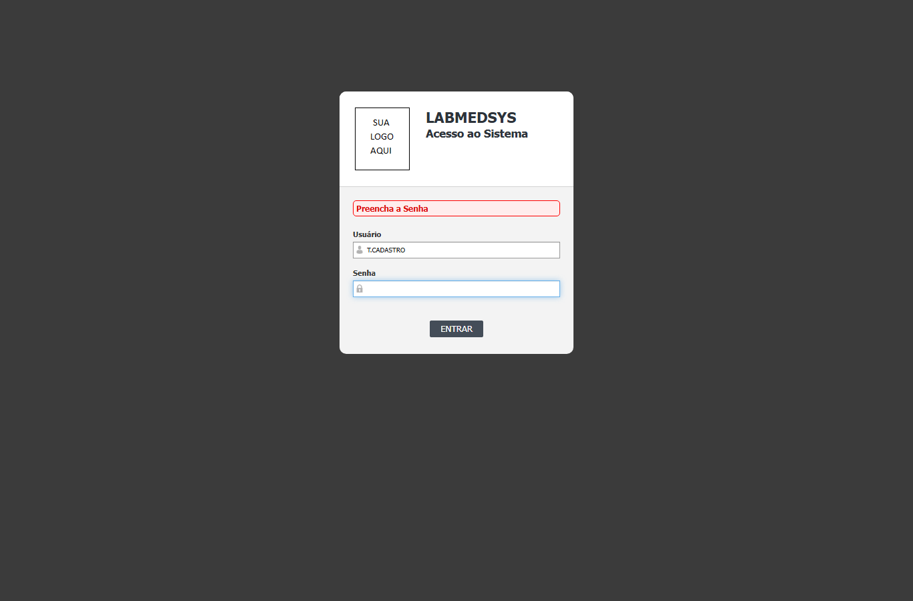
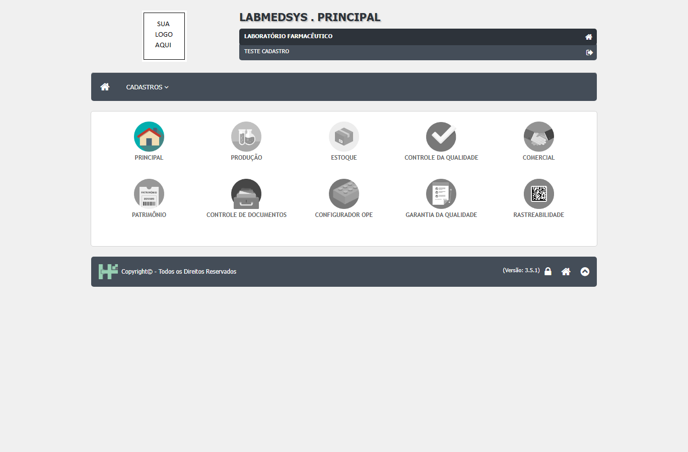
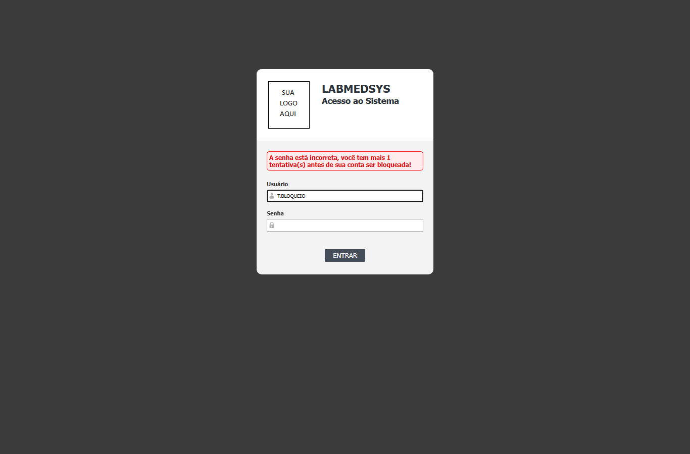
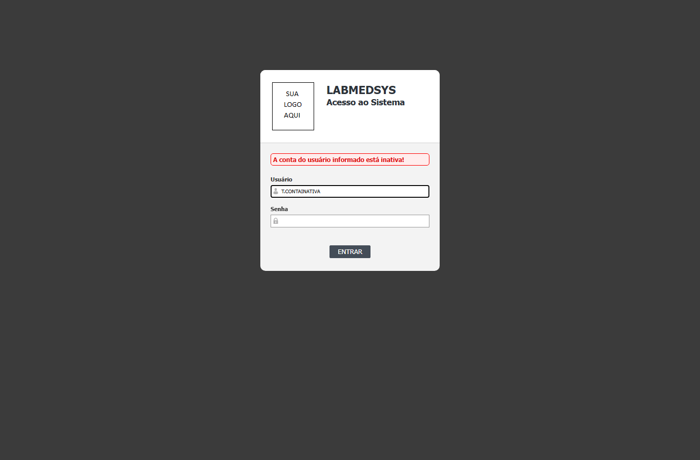
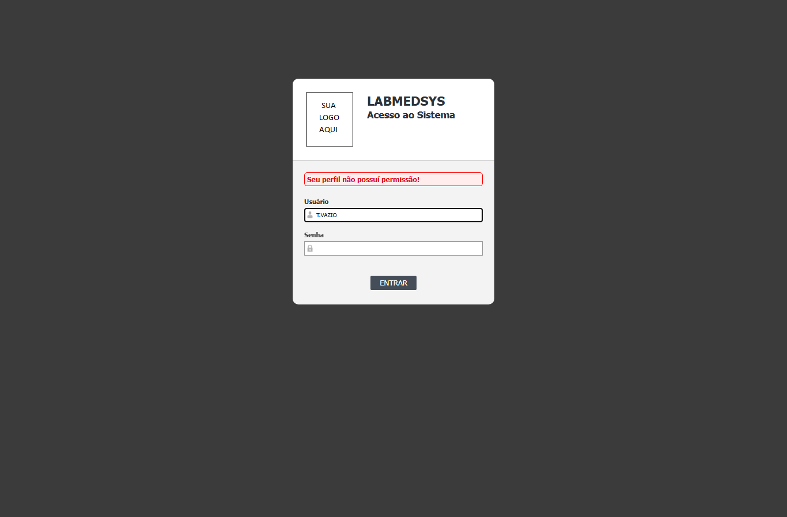

Para que serve
É a porta de entrada do LabMedSys. Toda pessoa, a cada entrada, informa Usuário e Senha. A tela confere os dois, aplica as regras de bloqueio, validade e permissão e abre a tela inicial (ou a Troca de senha, se a senha for provisória ou estiver vencida). Como o Principal faz o login central, os outros módulos recebem o usuário já autenticado. Todos os usuários passam por ela.
Quem usa e em que etapa do processo
Quem usa
- Todos os usuários do sistema, em cada entrada. É a primeira tela que qualquer pessoa vê.
- Os outros módulos usam o mesmo serviço de login por chamada de programa, sem passar pela tela.
- Quem pode abrir, incluir, alterar, excluir, imprimir e ver o histórico está em "Quem pode usar (permissões)", mais abaixo.
Em que etapa do processo entra (tela 1 do menu Acesso ao sistema, módulo Principal)
- Abrindo o endereço do sistema.
- Depois de Sair.
- Depois de trocar a senha com sucesso ou de desistir da troca obrigatória.
- Pelo botão "Fazer Login" das telas Sessão Expirada e Acesso Negado.
O que acontece depois (para onde o trabalho segue)
- Entrada aceita: abre a tela inicial. Se a senha é provisória (marcada para troca) ou está vencida, abre a Troca de senha no lugar.
- Entrada recusada: a mensagem aparece na própria tela e nada é aberto.
- Efeito no banco: cada tentativa grava uma linha em
SIS_ACESSO, cada erro de senha soma 1 ao contador do usuário e o acerto zera o contador. - Entrada vinda de outro endereço: se a página foi aberta com o parâmetro
urldesenv, o sistema redireciona para esse endereço levando o token. Ver a seção de segurança.
Fonte: Resumo da tela e fluxo da tela (leitura do código e dos testes). O que for leitura da área precisa ser validado com a área.
Antes de começar (o que precisa existir)
| Precisa existir | Para quê | Onde se cadastra |
|---|---|---|
| Conta de usuário com login e senha, ativa e dentro do período de validade | Sem ela a entrada é recusada | Administração › Conta usuário (feito pelo administrador) |
| Profissional ativo ligado à conta | Profissional inativo é recusado ("O usuário informado está inativo!") | Cadastros › Profissional |
| Perfil com ao menos uma função ligado à conta | Sem nenhuma função, a entrada é recusada | Administração › Perfil e Conta usuário |
Passo a passo
Situação das imagens (14/11/2026): imagens reaproveitadas dos testes de 05/10/2026, cada uma conferida contra o texto. Sem imagem: campos e botão marcados em vermelho, entrada pelo Enter, entrada pelo endereço com token, desbloqueio pelo administrador.
- Abra o endereço do LabMedSys no navegador. A tela mostra o nome do sistema, "Acesso ao Sistema" e os campos Usuário e Senha.

Figura 1: a tela de Login com Usuário e Senha vazios e o botão ENTRAR.
- Digite o Usuário e a Senha. A tecla Enter no campo Senha equivale a clicar em ENTRAR; no campo Usuário, o Enter só passa para o campo seguinte (Default.aspx:23-40). O servidor ignora espaços nas pontas e maiúsculas e minúsculas do usuário (Default.aspx.cs:253). O campo Senha aceita no máximo 14 caracteres.
- Clique em ENTRAR. Se faltar algum campo, o navegador avisa "Preencha o Usuário" e "Preencha a Senha" (Default.aspx:67 e 75; CT-PRI-002).

Figura 2: o Login depois de clicar em ENTRAR com os dois campos vazios: a faixa vermelha mostra "Preencha o Usuário" e "Preencha a Senha".

Figura 3: o Login com o Usuário T.CADASTRO preenchido e a Senha vazia: a faixa vermelha mostra só "Preencha a Senha".
- Se tudo estiver certo, abre a tela inicial (tela 03). Se for o primeiro acesso, ou se a senha foi redefinida pelo administrador ou está vencida, abre a Troca de senha (tela 02) no lugar.

Figura 4: a tela inicial que abre depois da entrada aceita (usuário TESTE CADASTRO), com a grade de módulos e o menu.
O que acontece ao confirmar ou salvar
- Entrada aceita: abre a tela inicial ou a Troca de senha (Default.aspx.cs:278-279). O contador de erros do usuário volta a zero (bllUsuario.cs:156).
- Entrada recusada: a mensagem aparece em uma faixa acima dos campos e nada é aberto.
- Registro: cada tentativa grava uma linha em
SIS_ACESSOe cada erro de senha soma 1 ao contador do usuário (bllUsuario.cs:103-157; dalUsuario.cs:1281-1327). Nenhuma tela do sistema mostra esses registros (CT-PRI-012, bloqueado: depende do DBA). - Entrada vinda de outro módulo: se o endereço traz um código de acesso (token) válido, a tela abre a sessão sem pedir senha (Default.aspx.cs:29-66; ver os cuidados).
O que o sistema recusa
| Mensagem na tela | Quando aparece | Imagem |
|---|---|---|
| Preencha o Usuário / Preencha a Senha | Campo em branco (mensagem do navegador; CT-PRI-002) | Figuras 2 e 3 |
| O usuário informado é inválido! | Login que não existe ou foi excluído (CT-PRI-003) | Figura 5 |
| A senha está incorreta, você tem mais N tentativa(s) antes de sua conta ser bloqueada! | Senha errada (CT-PRI-003 e 008) | Figuras 6, 7 e 8 |
| O usuário informado foi bloqueado devido o limite de tentativas de acesso ao sistema! | Depois de 4 erros seguidos; nem a senha certa entra (CT-PRI-008) | Figura 9 |
| O usuário informado está inativo! | Profissional inativo (CT-PRI-004) | Figura 10 |
| A conta do usuário informado está inativa! | Conta inativa (CT-PRI-005) | Figura 11 |
| A data de validade do usuário informado não permite o acesso ao sistema! | Hoje fora do período da conta (CT-PRI-006 e 007) | Figuras 12 e 13 |
| Seu perfil não possuí permissão! | O perfil não tem nenhuma função (CT-PRI-011; o erro de acentuação "possuí" é do sistema) | Figura 14 |
Figura 5: login que não existe: "O usuário informado é inválido!".
Figura 6: senha errada para um usuário que existe (T.CADASTRO): "A senha está incorreta, você tem mais 3 tentativa(s) antes de sua conta ser bloqueada!". É a mensagem diferente da Figura 5 que dá origem ao DV-PRI-015.
Figura 7: T.BLOQUEIO, primeira senha errada: "você tem mais 4 tentativa(s)".

Figura 8: T.BLOQUEIO, quarta senha errada: "você tem mais 1 tentativa(s)", embora o bloqueio já ocorra na quarta falha (DV-PRI-016).
Figura 9: T.BLOQUEIO na tentativa seguinte: "O usuário informado foi bloqueado devido o limite de tentativas de acesso ao sistema!".
Figura 10: T.INATIVO: "O usuário informado está inativo!".

Figura 11: T.CONTAINATIVA: "A conta do usuário informado está inativa!".
Figura 12: T.VENCIDO: "A data de validade do usuário informado não permite o acesso ao sistema!".
Figura 13: T.FUTURO (validade que ainda não começou): a mesma mensagem de validade.

Figura 14: T.VAZIO, perfil sem nenhuma função: "Seu perfil não possuí permissão!".
Quem pode usar (permissões)
- A tela de Login não exige função: qualquer pessoa que alcance o endereço do sistema a vê. O que ela concede depende da conta.
- A entrada é recusada quando o usuário não tem nenhuma função em nenhum perfil (Default.aspx.cs:275-298; CT-PRI-011).
- A tela inicial e as demais só abrem depois da sessão aberta aqui. As mensagens que bloqueiam tela sem função estão na tela 05.
Cuidados e falhas conhecidas
- DV-PRI-015 (Média): o sistema responde com mensagens diferentes para "usuário inexistente" e "senha errada", o que permite descobrir quais logins existem. O esperado é uma só mensagem.
- DV-PRI-016 (Baixa): as mensagens dizem "mais 4, 3, 2 e 1 tentativa(s)", mas a conta bloqueia no 4º erro. Considere uma tentativa a menos do que a mensagem diz.
- DV-PRI-017 (Média): o Reset de senha do administrador desbloqueia a conta, mas o desbloqueio não aparece no histórico da conta (defeito da tela Conta usuário, achado neste teste).
- DV-PRI-019 (Média): o endereço com token abre a sessão de quem o recebe, sem senha. Não compartilhe nem cole esses endereços.
- A conta bloqueada só volta com o Reset de senha do administrador: não há desbloqueio por tempo.
- Não existe "esqueci minha senha": só o administrador redefine a senha.
- A tela não avisa que a senha está perto de vencer.
- Ponto para validar com a área: o endereço de entrada aceita o parâmetro
urldesenve redireciona para ele com o token depois do login; não foi testado (CT-PRI-ACE01-02).
Botões da tela
| Botão ou ação | Quando aparece | O que faz | Para onde leva |
|---|---|---|---|
| ENTRAR | Sempre | Confere os dois campos no navegador e envia ao servidor para autenticar | Tela inicial, Troca de senha ou mensagem de recusa |
| Tecla Enter | No campo Senha | Faz o mesmo que ENTRAR | Igual ao botão |
Campos da tela
Caminhos das fontes na seção Resumo da tela. "Só no navegador" quando só o navegador confere; "Sim (servidor)" quando o servidor também recusa.
| Campo na tela | Tipo | Obrigatório | Regra, limite ou valores possíveis | Fonte |
|---|---|---|---|---|
| Usuário | Texto | Sim, só no navegador ("Preencha o Usuário") | O servidor tira os espaços das pontas e converte para maiúsculas antes de procurar (Default.aspx.cs:253). Sem limite de tamanho no campo. | Default.aspx:67-69; Default.aspx.cs:253 |
| Senha | Texto oculto | Sim, só no navegador ("Preencha a Senha") | No navegador, aceita no máximo 14 caracteres. O servidor tira os espaços das pontas e cifra a senha antes de comparar. | Default.aspx:75-76; Default.aspx.cs:254; svcAutenticacao.cs:34 |
| urldesenv (parâmetro do endereço, não aparece na tela) | Endereço | Não | Se vier no endereço, é guardado em um campo escondido e usado como destino depois do login | Default.aspx:46; Default.aspx.cs:69-73 |
| token (parâmetro do endereço, não aparece na tela) | Código | Não | Se vier no endereço e for válido, a tela abre a sessão sem pedir senha | Default.aspx.cs:29-66 |
Botões e ações
| Botão ou ação | Quando aparece | O que faz | Para onde leva | Fonte |
|---|---|---|---|---|
| ENTRAR | Sempre | Valida os dois campos no navegador e, se preenchidos, envia ao servidor para autenticar | Tela inicial, Troca de senha ou mensagem de recusa | Default.aspx:81; Default.aspx.cs:244-301 |
| Tecla Enter | No campo Senha | Aciona ENTRAR | Igual ao botão | Default.aspx:27-29 |
| Abertura da página sem enviar nada | Toda vez que a página é aberta | Zera na sessão o usuário, as funções, o menu, o login, a marca de troca de senha e o token. Não invalida o token no serviço | Fica na tela de login | Default.aspx.cs:94-101 |
Mensagens do sistema
Nem todas foram vistas numa tela. As marcadas "vista em teste" aparecem no resultado da rodada de 05 e 06/10/2026.
| Mensagem (texto exato do código) | Quando aparece | Fonte |
|---|---|---|
| Preencha o Usuário | Usuário em branco (mensagem do navegador). Vista em teste: CT-PRI-002 | Default.aspx:67 |
| Preencha a Senha | Senha em branco (mensagem do navegador). Vista em teste: CT-PRI-002 | Default.aspx:75 |
| Login e/ou senha não foram informados. | Pedido que chega ao servidor sem login ou sem senha. Nunca aparece na tela, porque o navegador barra antes (CT-PRI-002) | bllUsuario.cs:90-97 |
| O usuário informado é inválido! | Login que não existe ou foi excluído. Vista em teste: CT-PRI-003 | bllUsuario.cs:101-108 |
| A conta do usuário informado está inativa! | Conta marcada como inativa. Vista em teste: CT-PRI-005 | bllUsuario.cs:110-116 |
| O usuário informado está inativo! | Profissional inativo. Vista em teste: CT-PRI-004 | bllUsuario.cs:118-125 |
| A data de validade do usuário informado não permite o acesso ao sistema! | Hoje fora do período entre a data inicial e a final da conta. Vista em teste: CT-PRI-006 e 007 | bllUsuario.cs:127-134 e 187-189 |
| O usuário informado foi bloqueado devido o limite de tentativas de acesso ao sistema! | Contador de erros chegou a 4. Vista em teste: CT-PRI-008 | bllUsuario.cs:136-143 e 181 |
| A senha está incorreta, você tem mais N tentativa(s) antes de sua conta ser bloqueada! | Senha errada. N é 4 menos o contador lido antes do erro atual. Vista em teste: CT-PRI-008 (mostrou 4, 3, 2 e 1; DV-PRI-016) | bllUsuario.cs:145-154 |
| Seu perfil não possuí permissão! | O perfil do usuário não tem nenhuma função. Vista em teste: CT-PRI-011 (com o erro de acentuação "possuí") | Default.aspx.cs:296 |
| Erro ao acessar este usuário! | Token válido, mas sem usuário correspondente. Situação praticamente impossível; não vista | Default.aspx.cs:57-60 |
| Usuário não autenticado! | Entrada pelo token com token inválido ou vencido: abre a tela Acesso Negado com esta frase. Não vista | Default.aspx.cs:62-65; acessoNegado.aspx.cs:15-17 |
Quem pode fazer o quê
Ainda não levantado para esta tela
O quadro "Quem pode fazer o quê" é preenchido a partir de testes de tela por perfil (nível, área e etapa do registro), nunca por suposição. Esta tela ainda não passou por esse levantamento.